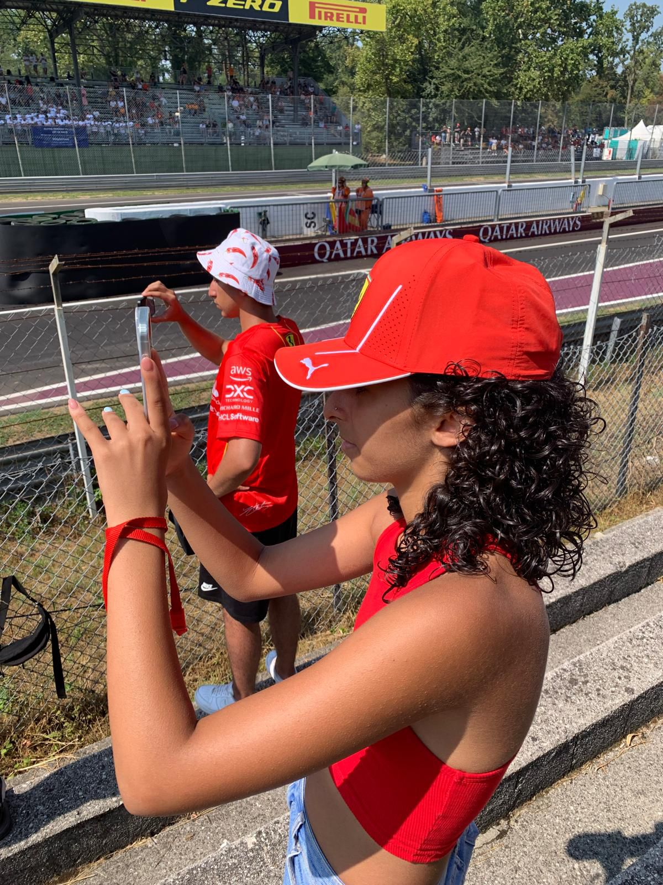

The social media manager: Sherine Cirigliano
When I was little, while other girls played with dolls, I played with cars or Lego. One day I
saw my father watching F1 on TV so I started watching it too and growing up, it became one of my
greatest passions. So, when I discovered about the existence of this project, I immediately
wanted to be part of it! In addition to the world of motors, I also have other passions and
hobbies such as athletics and music.
